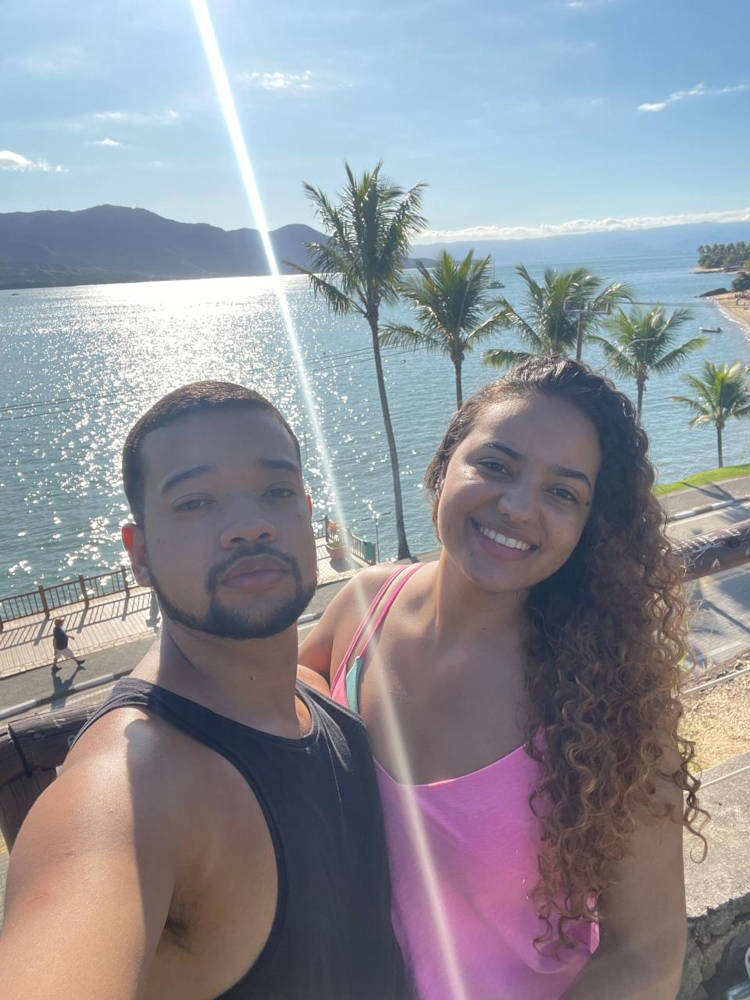

Sobre Mim
Fala aí! Meu nome é Wallison, tenho 27 anos e este espaço foi criado para compartilhar um pouco da minha trajetória, ideias e aprendizados. Fique à vontade para explorar e conhecer mais sobre mim.
Quando o assunto é aproveitar a vida...
Nos meus momentos livres, eu gosto mesmo é de mergulhar em uma boa série ou em um excelente filme! Às vezes até acho que sou meio fanático, consigo passar horas (e horas mesmo!) falando sobre enredos, personagens e aqueles plots que viram nossa cabeça.
Da uma olhada nos meus favoritos!
Viajar, pra mim, é quando a alma respira. É a melhor forma de expressar quem eu realmente sou, longe das preocupações, das rotinas e dos dilemas do dia a dia, sinto que minha essência surge com força total. Claro na companhia da minha esposa tudo fica melhor.
